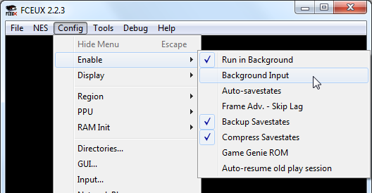
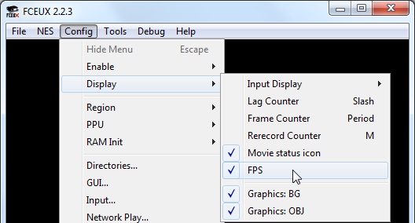
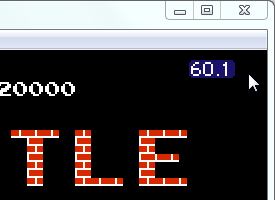
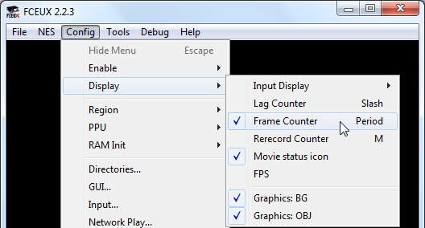
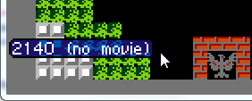
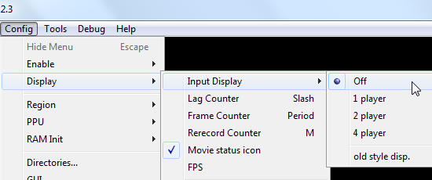
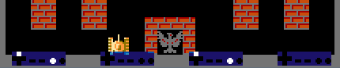
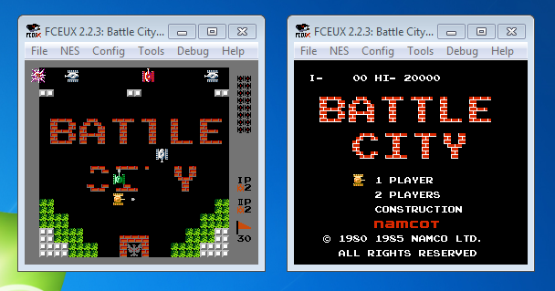
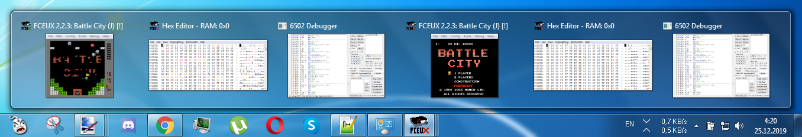

Содержание
Кликни на опцию, чтобы посмотреть детали.
| Нажатия вне окна | FPS | Номер кадра | Нажатые кнопки | Копии эмулятора | Прочее |
По умолчанию окно эмулятора должно быть в фокусе, иначе управление не будет работать.
Чтобы управление считывалось в любом случае, включи опцию Config -> Enable -> Background Input.

После чего ты сможешь переключиться на другое окно, и в то же время продолжать управлять своим игроком.
Опция распространяется не только на игровые кнопки, но еще и на горячие клавиши. В некоторых случаях это может быть полезно, но также может и мешать.
FPS показывает скорость работы эмулятора. Включается в Config -> Display -> FPS.

Счетчик FPS будет отображен справа вверху.

Стандартная скорость для региона NTSC это 60 fps, для PAL это 50 fps.
Когда эмулятор выставляется на паузу, скорость падает до 20 fps. Но в действительности эмуляция игры приостанавливается.
Счетчик показывает номер текущего кадра. Включается в Config -> Display -> Frame Counter.

Счетчик кадров будет отображен слева внизу.

Фраза no movie означает что в данный момент запись фильма не воспроизводится.
Счетчик кадров сбрасывается после Soft Reset и Hard Reset.
В окне эмулятора можно отображать нажатые кнопки одного, двух, или всех четырех игроков. В эмуляторе выбери Config -> Display -> Input Display.

Внизу окна появятся изображения с джойстиками. Нажатые кнопки будут подсвечиваться.

Ты можешь запускать несколько копий эмулятора одновременно.

Это может пригодиться при тестировании, например при сравнении старой версии хака с новой.
Открытие копий эмулятора увеличивает нагрузку на компьютер. Если тот недостаточно мощный, эмуляторы могут работать с разной скоростью, что может затруднить тестирование, например при попытке синхронизированно управлять игроком в двух эмуляторах одновременно.
Рекомендую сразу открыть все необходимые дополнительные окна в основном эмуляторе, а только потом запускать его копию, чтобы с панели задач было понятно какому эмулятору какие окна принадлежат.

Эмулятор при закрытии обновляет файл конфигурации. Эмулятор, который был закрыт последним, в итоге перезапишет настройки на свои. Это нужно учитывать, если в одном из эмуляторов ты будешь временно менять какие-то настройки.
Для получения информации по другим настройкам и возможностям эмулятора обратись к онлайн справке.
Офлайн версия этой справки находится в файле fceux.chm в корневой папке эмулятора.
Обе версии справки на английском языке. Материал в них немного устаревший, но это не отменяет его ценности. Вероятно, файл fceux.chm может быть еще более устаревшим, чем его онлайн версия.